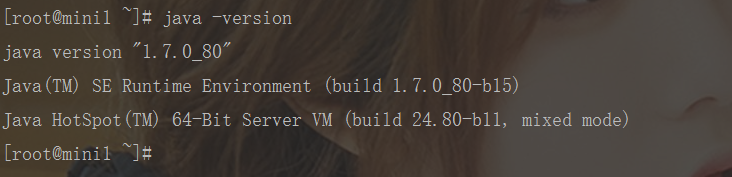
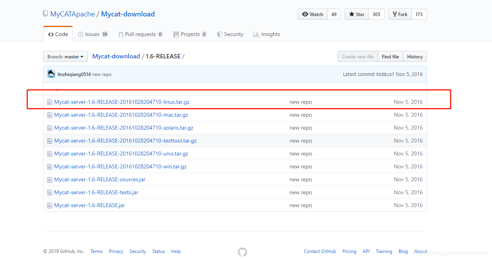
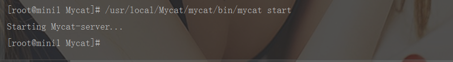

echo编辑整理，欢迎转载，转载请声明文章来源。欢迎添加echo微信(微信号：t2421499075)交流学习。 百战不败，依不自称常胜，百败不颓，依能奋力前行。——这才是真正的堪称强大！！！
Mycat是一个数据库中间件，并不能直接当为数据库使用，它的所有操作数据来源都是对应数据库中取出来的。所以我们要安装运行Mycat需要有对应的数据库，这里预先安装了MySQL5.5，总共安装了3台服务器，对应三个数据库。
java -version
下载地址：https://github.com/MyCATApache/Mycat-download/tree/master/1.6-RELEASE

// 自定义一个目录
mkdir /usr/local/Mycat
// 将上传的压缩包移动到Mycat文件
mv Mycat-server-1.6-RELEASE-20161028204710-linux.tar.gz /usr/local/Mycat/tar -xzvf Mycat-server-1.6-RELEASE-20161028204710-linux.tar.gz// 进入bin目录，输入如下命令（启动）
./mycat start
// 进入bin目录，输入如下命令（停止）
./mycat stop
如果没有报错那就已经正确安装了。
做一个有底线的博客主